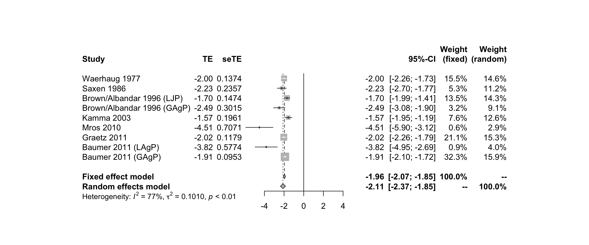

Exercise 2 - nibali (Incidence data)
## id authoryear toothloss patientyr type mixed
## 1 1 Waerhaug 1977 53 388 mixed 1
## 2 3 Saxen 1986 18 168 mixed 1
## 3 8 Brown/Albandar 1996 (LJP) 46 252 localised 0
## 4 9 Brown/Albandar 1996 (GAgP) 11 132 generalised 0
## 5 11 Kamma 2003 26 125 generalised 0
## 6 13 Mros 2010 2 182 localised 0
## 7 14 Graetz 2011 72 547 mixed 1
## 8 15 Baumer 2011 (LAgP) 3 136 localised 0
## 9 16 Baumer 2011 (GAgP) 110 746 generalised 0
## localised generalised rate
## 1 0 0 0.136
## 2 0 0 0.107
## 3 1 0 0.183
## 4 0 1 0.083
## 5 0 1 0.208
## 6 1 0 0.011
## 7 0 0 0.132
## 8 1 0 0.022
## 9 0 1 0.148| AuthorYear | countrycontinent | numberofparticipants | rate | events | diagnosisofdepression | referralsource | author | year | referral | ratevar | ratese |
|---|---|---|---|---|---|---|---|---|---|---|---|
| Baiyewu, 2012 | Nigeria, Africa | 53 | 0.46 | 24 | NPI | Community-Based | ?Baiyewu | 2012 | 1 | 0.005 | 0.068 |
| Brodaty, 2012 | Australia, Australia | 319 | 0.15 | 48 | NPI | Community-Based | Brodaty | 2012 | 1 | 0.000 | 0.020 |
| Chan, 2003 | USA, North America | 121 | 0.16 | 19 | NPI | Community-Based | Chan | 2003 | 1 | 0.001 | 0.033 |
| Chan, 2010 | Hong Kong, Asia | 338 | 0.14 | 47 | NPI | Community-Based | Chan | 2010 | 1 | 0.000 | 0.019 |
| Colenda, 2010 | USA, North America | 215 | 0.22 | 47 | DSM | Community-Based | Colenda | 2010 | 1 | 0.001 | 0.028 |
The meaning of covariates in data
| Covariates | Meaning |
|---|---|
| authoryear | name of study |
| toothloss | number of toothless events |
| patientyr | person-time |
| rate | incidence |
2.1 Log Transformation
2.1a. Generate the log transformation of rate and standard error
First of all, we have to generate new variables for the log transformation of the rate and the standard error of the transformed rate. You can find the details for the formula on page 58 of the handout.
So, the code for transforming the rate is:
2.1b. Use metagen to carry out the meta-analysis
# Use metagen to carry out the meta-analysis
nibali.gen<-metagen(lograte, selnrate, studlab = authoryear, data = nibali)
nibali.gen## 95%-CI %W(fixed) %W(random)
## Waerhaug 1977 -1.9951 [-2.2643; -1.7259] 15.5 14.6
## Saxen 1986 -2.2349 [-2.6969; -1.7730] 5.3 11.2
## Brown/Albandar 1996 (LJP) -1.6983 [-1.9873; -1.4093] 13.5 14.3
## Brown/Albandar 1996 (GAgP) -2.4889 [-3.0799; -1.8980] 3.2 9.1
## Kamma 2003 -1.5702 [-1.9546; -1.1858] 7.6 12.6
## Mros 2010 -4.5099 [-5.8958; -3.1240] 0.6 2.9
## Graetz 2011 -2.0250 [-2.2559; -1.7940] 21.1 15.3
## Baumer 2011 (LAgP) -3.8167 [-4.9483; -2.6851] 0.9 4.0
## Baumer 2011 (GAgP) -1.9105 [-2.0974; -1.7237] 32.3 15.9
##
## Number of studies combined: k = 9
##
## 95%-CI z p-value
## Fixed effect model -1.9611 [-2.0672; -1.8549] -36.21 < 0.0001
## Random effects model -2.1093 [-2.3688; -1.8497] -15.93 < 0.0001
##
## Quantifying heterogeneity:
## tau^2 = 0.1010; H = 2.11 [1.53; 2.90]; I^2 = 77.5% [57.2%; 88.1%]
##
## Test of heterogeneity:
## Q d.f. p-value
## 35.52 8 < 0.0001
##
## Details on meta-analytical method:
## - Inverse variance method
## - DerSimonian-Laird estimator for tau^22.1c. Forest plot

You can save this plot as pdf file by using the following command.
## quartz_off_screen
## 2So, the pooled incidence rate of fixed effect model is
## [1] 0.141And the duration of disease is
## [1] 7.12.2 GLMM Method for incidence data
Here, we use the commandglmer in lme4 package to conduct the GLMM for incidence data. You can see the details by typing help("glmer").
nibali.glm <- glmer(toothloss/patientyr ~ (1 | authoryear), data = nibali, poisson(link = "log"),weights = patientyr,nAGQ = 10)
summary(nibali.glm)## Generalized linear mixed model fit by maximum likelihood (Adaptive
## Gauss-Hermite Quadrature, nAGQ = 10) [glmerMod]
## Family: poisson ( log )
## Formula: toothloss/patientyr ~ (1 | authoryear)
## Data: nibali
## Weights: patientyr
##
## AIC BIC logLik deviance df.resid
## 38.2 38.6 -17.1 34.2 7
##
## Scaled residuals:
## Min 1Q Median 3Q Max
## -1.1562 -0.0548 0.0708 0.0908 0.2713
##
## Random effects:
## Groups Name Variance Std.Dev.
## authoryear (Intercept) 0.552 0.743
## Number of obs: 9, groups: authoryear, 9
##
## Fixed effects:
## Estimate Std. Error z value Pr(>|z|)
## (Intercept) -2.367 0.268 -8.84 <2e-16 ***
## ---
## Signif. codes: 0 '***' 0.001 '**' 0.01 '*' 0.05 '.' 0.1 ' ' 1It is exactly a Random Intercept Poisson Regression Model.
You can see that the fixed effect is -2.37, which can be transformed to the pooled incidence rate by typing exp(-2.37).
## [1] 0.0935And the duration of disease can be also obtained.
## [1] 10.7